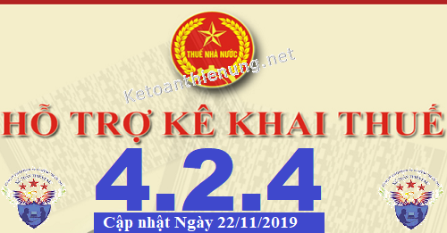
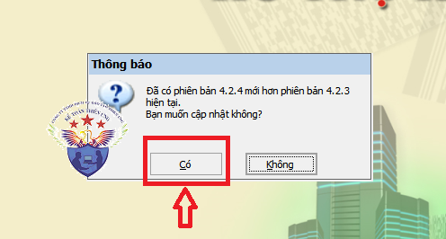
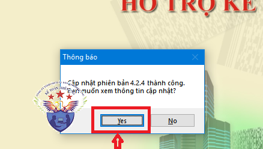

Phần mềm hỗ trợ kê khai thuế HTKK 4.2.4 mới nhất 2019 là Phần mềm HTKK 4.2.4 mới nhất ngày 22/11/2019 của Tổng cục thuế. Download phần mềm HTKK 4.2.4 miễn phí tại đây.
Ngày 22/11/2019 Tổng cục Thuế thông báo về việc Triển khai ứng dụng Hỗ trợ kê khai (HTKK) phiên bản 4.2.4 đáp ứng yêu cầu nghiệp vụ theo Thông tư số 95/2016/TT-BTC ngày 28/06/2016 của Bộ Tài chính
TỔNG CỤC THUẾ THÔNG BÁO
V/v: Triển khai ứng dụng Hỗ trợ kê khai (HTKK) phiên bản 4.2.4 đáp ứng yêu cầu nghiệp vụ theo Thông tư số 95/2016/TT-BTC ngày 28/06/2016 của Bộ Tài chính
Tổng cục Thuế thông báo nâng cấp ứng dụng Hỗ trợ kê khai (HTKK) phiên bản 4.2.4 đáp ứng yêu cầu nghiệp vụ theo Thông tư số 95/2016/TT-BTC ngày 28/06/2016 của Bộ Tài chính hướng dẫn về đăng ký thuế đồng thời nâng cấp HTKK phiên bản 4.2.3, cụ thể như sau:V/v: Triển khai ứng dụng Hỗ trợ kê khai (HTKK) phiên bản 4.2.4 đáp ứng yêu cầu nghiệp vụ theo Thông tư số 95/2016/TT-BTC ngày 28/06/2016 của Bộ Tài chính
1. Nâng cấp ứng dụng bổ sung mẫu biểu và các yêu cầu nghiệp vụ phát sinh
1.1 Bổ sung mẫu biểu kê khai
- Nâng cấp ứng dụng bổ sung chức năng hỗ trợ NNT kê khai hồ sơ đăng ký cấp MST cá nhân/đăng ký thay đổi thông tin cá nhân nộp hồ sơ đăng ký thuế theo mẫu 05-ĐK-TH-TCT cho Cơ quan chi trả thu nhập: Hỗ trợ nhập, sửa, xóa, in, kết xuất XML, kết xuất Excel, tải tờ khai từ XML, tra cứu hướng dẫn lập từng chỉ tiêu.
1.2 Cập nhật địa bàn hành chính theo Nghị quyết số 768/NQ-UBTVQH14 ngày 11/09/2019 về việc thành lập thị xã Kinh Môn và các phường, xã thuộc thị xã Kinh Môn, tỉnh Hải Dương.
- Cập nhật huyện Kinh Môn thành thị xã Kinh Môn, tỉnh Hải Dương;
- Cập nhật Thị trấn Kinh Môn (mã 1070917) thành phường An Lưu (mã 1070917);
- Cập nhật xã An Phụ (mã 1070943) thành phường An Phụ (mã 1070943);
- Cập nhật xã An Sinh (mã 1070939) thành phường An Sinh (mã 1070939);
- Cập nhật xã Duy Tân (mã 1070909) thành phường Duy Tân (mã 1070909);
- Cập nhật xã Hiến Thành (mã 1070949) thành phường Hiến Thành (mã 1070949);
- Cập nhật xã Hiệp An (mã 1070945) thành phường Hiệp An (mã 1070945);
- Cập nhật xã Hiệp Sơn (mã 1070913) thành phường Hiệp Sơn (mã 1070913);
- Cập nhật xã Long Xuyên (mã 1070915) thành phường Long Xuyên (mã 1070915);
- Cập nhật thị trấn Minh Tân (mã 1070929) thành phường Minh Tân (mã 1070929);
- Cập nhật xã Thái Sơn (mã 1070901) và xã Phạm Mệnh (mã 1070911) thành phường Phạm Thái (mã 1070951);
- Cập nhật thị trấn Phú Thứ (mã 1070935) thành phường Phú Thứ (mã 1070935);
- Cập nhật xã Tân Dân (mã 1070927) thành phường Tân Dân (mã 1070927);
- Cập nhật xã Thái Thịnh (mã 1070947) thành phường Thái Thịnh (mã 1070947);
- Cập nhật xã Thất Hùng (mã 1070921) thành phường Thất Hùng (mã 1070921);
- Cập nhật xã Quang Trung (mã 1070931) và xã Phúc Thành (mã 1070925) thành xã Quang Thành (mã 1070953).
1.3 Chức năng kê khai tờ khai cá nhân kinh doanh (01/CNKD)
- Cập nhật cho phép tích chọn [Tổ chức kê khai thay] trong trường hợp kê khai tờ khai theo lần phát sinh.
1.4 Chức năng kê khai tờ khai Khấu trừ thuế thu nhập cá nhân (06/TNCN)
- Cập nhật độ rộng chỉ tiêu [31] – Tổng giá trị chuyển nhượng chứng khoán: Cho phép nhập tối đa 15 ký tự.
-----------------------------------------------------------------------------
2. Nâng cấp một số chức năng trên HTKK phiên bản 4.2.32.1 Chức năng Lập báo cáo tình hình sử dụng hóa đơn theo số lượng (BC26/AC)
- Cập nhật tự động hiển thị [Số lượng tồn đầu kỳ] của kỳ này từ chỉ tiêu [Tồn cuối kỳ] của kỳ liền trước.
2.2 Chức năng lập Báo cáo tài chính (Mẫu B01-DNNKLT)
- Cập nhật chức năng kết xuất XML hiển thị đủ dữ liệu chỉ tiêu cột [Năm trước] của Báo cáo lưu chuyển tiền tệ (theo phương pháp trực tiếp).
2.3 Chức năng kê khai tờ khai thuế tài nguyên (dành cho cơ sở sản xuất thủy điện) (03/TĐ-TAIN)
- Cập nhật hiển thị danh mục chỉ tiêu [21] – Tên loại tài nguyên.
------------------------------------------------------------------------
Bắt đầu từ ngày 23/11/2019, khi lập hồ sơ khai thuế có liên quan đến nội dung nâng cấp nêu trên, tổ chức, cá nhân nộp thuế sẽ sử dụng các chức năng kê khai tại ứng dụng HTKK 4.2.4 thay cho các phiên bản trước đây.

----------------------------------------------------------------------
Download Phần mềm HTKK 4.2.4 tại đây:

Để cài đặt được HTKK 4.2.4, máy tính của NNT cần đáp ứng thông số sau:
- Hệ điều hành WinXP (SP2, SP3), Win 7 trở lên… (không hỗ trợ hệ điều hành iOS, Mac).
- Máy tính có cài .NET Framework 3.5 trở lên (có thể tải bộ cài .NET Framework 3.5 tại đây).
- Nếu máy tính sử dụng hệ điều hành Win 7 trở lên không phải cài đặt .NET Framework 3.5 mà chỉ cần kích hoạt .NET Framework 3.5 đã tích hợp sẵn theo tài liệu hướng dẫn cài đặt tại đây
- Hệ điều hành WinXP (SP2, SP3), Win 7 trở lên… (không hỗ trợ hệ điều hành iOS, Mac).
- Máy tính có cài .NET Framework 3.5 trở lên (có thể tải bộ cài .NET Framework 3.5 tại đây).
- Nếu máy tính sử dụng hệ điều hành Win 7 trở lên không phải cài đặt .NET Framework 3.5 mà chỉ cần kích hoạt .NET Framework 3.5 đã tích hợp sẵn theo tài liệu hướng dẫn cài đặt tại đây
-----------------------------------------------------------------------------------------------
- Mọi phản ánh, góp ý của tổ chức, cá nhân nộp thuế được gửi đến cơ quan Thuế theo các số điện thoại, hộp thư điện tử hỗ trợ NNT về ứng dụng HTKK do cơ quan Thuế cung cấp.
Tổng cục Thuế trân trọng thông báo./.
-----------------------------------------------------------------------
Trường hợp: Máy tính các bạn đã cài phần mềm HTKK 4.2.3 rồi -> Các bạn chỉ cần Bật phần mềm HTKK 4.2.3 đó lên -> Phần mềm sẽ hiển thị Thông báo cập nhật lên Phần mềm HTKK 4.2.4 -> Các bạn bấm nút "Có"

-> Tiếp đó đợi phần mềm chạy cập nhật là xong nhé:

Như vậy là các bạn đã nâng cấp xong Phần mềm HTKK 4.2.4 nhé
------------------------------------------------------------------------